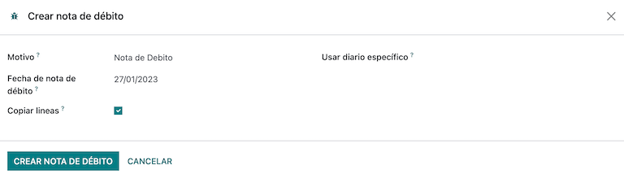
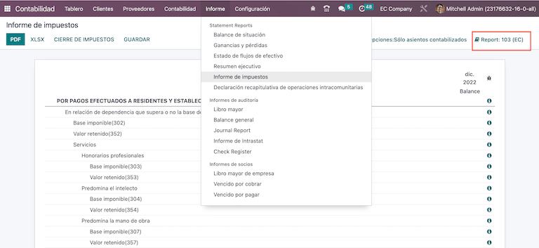

Ecuador¶
Introducción¶
Con la localización para Ecuador puede generar documentos electrónicos con su XML, folio fiscal, con firma electrónica y conexión directa con el SRI.
Los documentos compatibles son facturas, notas de crédito y débito, liquidaciones de compra y retenciones.
La localización también incluye automatizaciones para predecir con facilidad la retención que debe aplicarse a cada factura de compra.
Glosario¶
Estos son algunos de los términos esenciales para la localización peruana:
SRI: significa Servicio de Rentas Internas, es la organización gubernamental que se encarga del pago de impuestos en Ecuador.
EDI: significa Intercambio electrónico de datos y se refiere al envío de documentos electrónicos.
RIMPE: significa Regimen Simplificado para Emprendedores y Negocios, es el tipo de contribuyente calificado para el SRI.
Configuración¶
Instalación de módulos¶
Instale los siguientes módulos para obtener todas las funciones de la localización de Ecuador:
Nombre |
Nombre técnico |
Descripción |
|---|---|---|
Ecuador - Contabilidad |
|
El paquete de localización fiscal predeterminado agrega características contables para la localización de Ecuador, las cuales representan la configuración mínima necesaria para que una empresa opere en Ecuador de acuerdo a los lineamientos establecidos por el SRI. La instalación del módulo carga de forma automática el plan de cuentas, impuestos, tipos de documento y tipos de soporte tributario. Además, los formularios 103 y 104 se generan de forma automática. |
EDI contabilidad de Ecuador |
|
Incluye todos los requisitos técnicos y funcionales para generar y validar documentos electrónicos según la documentación técnica publicada por el SRI. Los documentos autorizados son: facturas, notas de crédito y débito, retenciones y liquidaciones de compra. |
Nota
Si selecciona Ecuador como su país al instalar una base de datos desde cero, Odoo instalará de forma automática el módulo base Ecuador - Contabilidad.
Configure su empresa¶
Para configurar la información de su empresa, vaya a la aplicación Contactos y busque el nombre de su empresa o active el modo de desarrollador y vaya a y edite el contacto para configurar la siguiente información:
Seleccione la opción Empresa en la parte superior:
Nombre
Dirección
Número de identificación
Tipo de contribuyente
Teléfono
Correo electrónico
Suba el logo de la empresa y guarde.
Documentos electrónicos¶
Para subir su información para documentos electrónicos vaya a y busque localización de Ecuador.
Configure la siguiente información:
Razón social de la empresa
Usar servidores de producción: seleccione la casilla si su empresa utilizará documentos electrónicos en el entorno de producción. Si desea utilizar el entorno de prueba para los documentos electrónicos, no seleccione la casilla.
Régimen: seleccione si su empresa se encuentra en un régimen general o está calificada como RIMPE.
Obligado a llevar libros contables: seleccione la casilla si su empresa tiene esta condición.
Impuestos predeterminados para retenciones
Emitir retenciones: seleccione la casilla si su empresa realizará retenciones electrónicas.
Retener consumibles: ingrese el código de las retenciones cuando compra bienes.
Retener servicios: ingrese el código de las retenciones cuando compra servicios.
Retener tarjeta de crédito: ingrese el código de la retención cuando realiza una compra con tarjeta de crédito.
Número de agente de retención: ingrese el número de resolución del agente de retención de la empresa, si aplica para su empresa.
Archivo de certificado digital: suba su certificado digital y contraseña, y luego guárdelos.
Número de contribuyente especial: si su empresa está calificada como contribuyente especial, complete este campo con su número de contribuyente correspondiente.

Nota
Al configurar las retenciones en el menú de configuración, las retenciones sugeridas solo son para proveedores nacionales cuando no hay retenciones configuradas para su tipo de contribuyente. Además, la configuración de retención de tarjeta de crédito siempre se utiliza con un método de pago SRI de tarjeta de crédito o débito.
Retención de IVA¶
Esta configuración solo aplica si el SRI le calificó como agente de retención, de lo contrario omita este paso. Para configurar su retención de IVA, vaya a .
Debe configurar el porcentaje de retención que aplica a cada tipo de contribuyente, especificar la retención de IVA de bienes y la retención de IVA de servicios.

Truco
En caso de que el tipo de contribuyente sea RIMPE, también debe configurar el porcentaje de retención de ganancias.
Puntos de impresión¶
Para configurar sus puntos de impresión, vaya a .
Debe configurar los puntos de impresión para cada tipo de documento electrónico que necesite. Por ejemplo: facturas de cliente, notas de crédito y notas de débito.
Para cada punto de impresión, debe configurar la siguiente información:
Nombre del diario: debe tener el formato
[Entidad de emisión]-[Punto de emisión] [Tipo de documento], por ejemplo:001-001 Documentos de venta.Tipo: se refiere al tipo de diario, seleccione
Ventas.¿Usar documentos?: esta casilla se selecciona de forma automática, déjela así.
Entidad de emisión: configure el número de establecimiento.
Punto de emisión: configure el punto de impresión.
Dirección de emisión: configure la dirección del establecimiento.
Cuenta de ingresos predeterminada: configure la cuenta de ingresos predeterminada.
Secuencia de notas de crédito especializada: seleccione la casilla si se deben generar notas de crédito a partir de este punto de impresión - diario.
Código corto: este es el código único para la secuencia de asientos contables, escriba un código único de 5 dígitos, por ejemplo:
VT001
Las facturas de cliente, notas de crédito y notas de débito deben usar el mismo diario que el Punto de emisión, y el punto de entidad debe ser único por diario.

Nota
En la pestaña Ajustes avanzados, seleccione la casilla facturación electrónica para habilitarla para Ecuador.
Ver también
Retenciones¶
Debe definir un diario de retenciones, para hacerlo vaya a y configure lo siguiente:
Nombre del diario: debe tener el formato
[Entidad de emisión]-[Punto de emisión] [Tipo de documento], por ejemplo:001-001 Retenciones.Tipo: se refiere al tipo de diario, seleccione
varios.Tipo de retención: configure la retención de la compra.
¿Usar documentos?: esta casilla se selecciona de forma automática, déjela así.
Entidad de emisión: configure el número de establecimiento.
Punto de emisión: configure el punto de impresión.
Dirección de emisión: configure la dirección del establecimiento.
Cuenta predeterminada: configure la cuenta de ingresos predeterminada.
Código corto: este es el código único para la secuencia de asientos contables, escriba un código único de 5 dígitos, por ejemplo:
RT001

Nota
En la pestaña Ajustes avanzados, seleccione la casilla Facturación electrónica para habilitar el envío de facturas electrónicas de retenciones.
Liquidaciones de compra¶
Debe crear un diario específico que se utilizará con liquidaciones de compra, para hacerlo vaya a y configure la siguiente información:
Nombre del diario: debe tener el formato
[Entidad de emisión]-[Punto de emisión] [Tipo de documento], por ejemplo:001-001 Retención.Tipo: se refiere al tipo de diario, seleccione
varios.Liquidaciones de compra: seleccione la casilla para habilitar las liquidaciones de compra.
¿Usar documentos?: esta casilla se selecciona de forma automática, déjela así.
Entidad de emisión: configure el número de establecimiento.
Punto de emisión: configure el punto de impresión.
Dirección de emisión: configure la dirección del establecimiento.
Código corto: este es el código único para la secuencia de asientos contables, escriba un código único de 5 dígitos, por ejemplo:
RT001

Nota
En la pestaña Ajustes avanzados, seleccione la casilla Facturación electrónica para habilitar el envío de facturas electrónicas de retenciones.
Configurar los datos maestros¶
Plan de cuentas¶
El plan de cuentas se instala de forma predeterminada como parte del conjunto de datos incluidos en el módulo de localización. Las cuentas se mapean en automático en los impuestos, cuentas por pagar y cuentas por cobrar predeterminadas.
El plan de cuentas de Ecuador está basado en la versión más reciente de la Superintendencia de Compañías, la cual se agrupa en varias categorías y es compatible con la contabilidad NIIF.
Puede agregar o eliminar cuentas según lo necesite la empresa.
Productos¶
Además de la información básica en sus productos, debe agregar la configuración del código de retención (impuesto) que se debe aplicar.
Vaya a en la pestaña «compra».

Contactos¶
Al crear un contacto, configure la siguiente información:
Seleccione la opción empresa en la parte superior si es un contacto con RUC o seleccione individuo si es un contacto con cédula o pasaporte.
Nombre
Dirección: el campo calle es necesario para confirmar la factura electrónica.
Número de identificación: seleccione un tipo de identificación:
RUC,cédulaopasaporte.Tipo de contribuyente: seleccione el tipo de contribuyente del SRI del contacto.
Teléfono
Correo electrónico

Nota
El tipo de contribuyente de SRI cuenta con la configuración de las retenciones de IVA y ganancias que se aplicarán cuando utilice este contacto en una factura de proveedor, puede crear una retención ahí.
Revisar sus impuestos¶
Como parte del módulo de localización, los impuestos se crean de forma automática con su configuración y cuentas financieras correspondientes.

Las siguientes opciones se configuran de forma automática:
Soporte tributario: se configura solo en el IVA, esta opción es útil cuando registra retenciones de compra.
Código ATS: a configurar solo para códigos de retención de impuestos de ingresos y es importante para que pueda registrar la retención.
Tablas de impuestos: configure los códigos del formulario 104 si es IVA y del formulario 103 si es un código de retención de ingresos.
Nombre del impuesto:
Para el IVA, el nombre debe tener el formato
IVA [porcentaje] (104, [código del formulario] [código de soporte tributario] [nombre corto del soporte tributario])Para el código de retenciones de impuestos de ingreso, el nombre debe tener el formato
Código ATS [Porcentaje de retención] [Nombre de la retención]
Una vez que instale el módulo de localización para Ecuador, los impuestos más comunes se configuran en automático. Puede crear otro en caso de que sea necesario y para hacerlo debe utilizar como referencia la configuración de los impuestos existentes.

Revisar sus tipos de documento¶
Algunas transacciones contables, como las facturas de cliente o de proveedor, se clasifican por tipo de documento. Las autoridades fiscales gubernamentales definen los tipos de documento. En este caso, lo hace el SRI.
Cada tipo de documento puede tener una secuencia única por diario asignado. Como parte de la localización, el tipo de documento incluye el país en el que se aplica el documento y los datos se crean de forma automática al instalar el módulo de localización.
La información necesaria para los tipos de documento se incluye de forma predeterminada, por lo que el usuario no necesita completar nada.
Flujos de trabajo¶
Una vez que configure su base de datos, puede registrar sus documentos.
Documentos de ventas¶
Facturas de cliente¶
Las facturas de clientes son documentos electrónicos que se envían al SRI una vez que están validados. Puede crearlos desde su orden de venta o de forma manual y deben incluir los siguientes datos:
Cliente: escriba la información del cliente.
Diario: seleccione la opción que corresponde con el punto de impresión de la factura de cliente.
Tipo de documento: escriba el tipo de documento con el formato
(01) Factura.Método de pago (SRI): seleccione cómo se pagará la factura.
Productos: especifique el producto con los impuestos correctos.

Nota de crédito del cliente¶
La nota de crédito del cliente es un documento electrónico que se envía al SRI una vez que está validado. Es necesario tener una factura validada (es decir, registrada) para poder registrar una nota de crédito. En la factura hay un botón denominado Nota de crédito, haga clic sobre este para ir al formulario Crear nota de crédito y complete la siguiente información:
Método de crédito: seleccione el tipo de método de crédito.
Reembolso parcial: utilice esta opción cuando necesite ingresar el primer número del documento y si es una nota de crédito parcial.
Reembolso completo: utilice esta opción si la nota de crédito es por el total de la factura y necesita que se valide de forma automática y se concilie con la factura.
Reembolso completo y nuevo borrador de factura: utilice esta opción si la nota de crédito es por el total de la factura y necesita que se valide de forma automática y se concilie con la factura para que después, en automático, se cree un nuevo borrador de factura.
Motivo: escriba el motivo de la nota de crédito.
Fecha de retroceso: seleccione las opciones específicas.
Fecha de reversión: agregue la fecha.
Utilizar un diario específico: seleccione el punto de impresión para su nota de crédito, o déjelo en blanco si quiere utilizar el mismo diario que la factura original.
Una vez hecho esto, puede hacer clic en el botón revertir.

Cuando utiliza la opción reembolso parcial, puede cambiar el importe de la nota de crédito y luego validarla. Antes de hacerlo, revise la siguiente información:
Cliente: escriba la información del cliente.
Diario: seleccione el punto de impresión para la nota de crédito del cliente.
Tipo de documento: elija el tipo de documento
(04) Nota de crédito.Productos: debe especificar el producto con los impuestos correctos.
Notas de débito del cliente¶
La nota de débito del cliente es un documento electrónico que, una vez validado, se envía al SRI. Es necesario tener una factura validada (es decir, registrada) para poder registrar una nota de crédito. En la factura hay un botón denominado nota de débito, haga clic allí para ir al formulario crear nota de débito y complete la siguiente información:
Motivo: escriba el motivo de la nota de débito.
Fecha de la nota de débito: seleccione las opciones específicas.
Copiar líneas: seleccione esta opción si necesita registrar una nota de débito con las mismas líneas de la factura.
Utilizar un diario específico: seleccione el punto de impresión para su nota de crédito, o déjelo en blanco si quiere utilizar el mismo diario que la factura original.
Una vez hecho esto, puede hacer clic en el botón crear nota de débito.
Puede cambiar el importe de la nota de débito y luego validarla. Antes de hacerlo, revise la siguiente información:
Cliente: escriba la información del cliente.
Diario: seleccione el punto de impresión para la nota de crédito del cliente.
Tipo de documento: elija el tipo de documento
(05) Nota de débito.Productos: debe especificar el producto con los impuestos correctos.

Retención de cliente¶
La retención de cliente es un documento físico para su empresa. El cliente emite este documento para aplicar una retención a la venta.
Es necesario que tenga una factura validada (es decir, registrada) para poder registrar una retención de cliente. En la factura hay un botón denominado agregar retención, haga clic allí para ir al formulario de retención de cliente y complete la siguiente información:
Número de documento: escriba el número de retención.
Líneas de retención: seleccione los impuestos que el cliente desea retener.
Antes de validar la retención, verifique que los importes para cada impuesto sean los mismos que en el documento original.

Documentos de compra¶
Factura de proveedor¶
La factura de proveedor es un documento físico para su empresa que emite el proveedor cuando la empresa realiza una compra.
Las facturas se pueden crear desde la orden de compra o de forma manual y deben incluir la siguiente información:
Proveedor: escriba la información del proveedor.
Fecha de factura: seleccione la fecha de la factura.
Diario: es el diario para las facturas de proveedor.
Tipo de documento: elija el tipo de documento
(01) Factura.Número de documento: escriba el número de documento.
Método de pago (SRI): seleccione cómo se pagará la factura.
Productos: especifique el producto con los impuestos correctos.

Importante
Al crear la retención de compra, verifique que el importe base sea correcto. Si necesita editar el importe del impuesto en la factura de proveedor, haga clic en el botón editar. También puede hacer clic en el botón editar en la pestaña apuntes contables y establecer a dónde quiere que se realice el ajuste.
Liquidación de compra¶
La liquidación de compra es un documento electrónico que se envía al SRI una vez que está validado.
Las empresas emiten este tipo de documento electrónico cuando realizan compras y los proveedores no emiten una factura por alguno de los siguientes motivos:
Los servicios fueron proporcionados por personas que no residen en Ecuador.
Los servicios fueron proporcionados por empresas extranjeras sin residencia o que no están establecidas en Ecuador.
Son compras de bienes o servicios de personas naturales que no tienen un RUC registrado, quienes debido a su nivel cultural o rusticidad no pueden emitir recibos de venta o facturas de cliente.
Son reembolsos de compra de bienes o servicios a empleados en una relación de dependencia (empleados de tiempo completo).
Los servicios fueron proporcionados por miembros de cuerpos colegiales, con el propósito de ejercer sus funciones.
Estos tipos de documentos electrónicos se pueden crear desde la orden de compra`o de forma manual en la vista de formulario de la :guilabel:`factura de proveedor. Deben incluir los siguientes datos:
Proveedor: escriba la información del proveedor.
Diario: seleccione el diario de la liquidación de compra con el punto de impresión correcto.
Tipo de documento: elija el tipo de documento
(03) Liquidación de compra.Número de documento: escriba el número de documento (secuencia). Solo deberá hacerlo una vez, después la secuencia se asignará a los siguientes documentos de forma automática.
Método de pago (SRI): seleccione cómo se pagará la factura.
Productos: especifique el producto con los impuestos correctos.
Una vez hecho esto, puede validar la liquidación de compra.

Retención de compra¶
La retención de compra es un documento electrónico que se envía al SRI una vez que está validado.
Es necesario tener una facturada validada para registrar una retención de compra. En la factura hay un botón denominado agregar retención, haga clic en él para ir al formulario de retención y complete la siguiente información:
Número de documento: escriba el número de documento (secuencia). Solo deberá hacerlo una vez, después la secuencia se asignará a los siguientes documentos de forma automática.
Líneas de retención: los impuestos aparecen de forma automática según la configuración de productos y proveedores. Debe revisar si los impuestos y el soporte tributario son correctos, en caso contrario puede editarlos y seleccionar los correctos.
Cuando termine de verificar la información, puede validar la retención.

Nota
No puede cambiar el soporte tributario de un impuesto que no se incluyó en la configuración de los impuestos que se utilizan en la factura de proveedor. Para hacerlo, vaya al impuesto que se aplicó en la factura de proveedor y modifique el soporte tributario.
Un impuesto de retención se puede dividir en dos o más líneas, depende de si se aplican dos o más porcentajes de retención.
Example
El sistema sugiere una retención de IVA del 30% con el soporte tributario 01, puede agregar su retención de IVA del 70% en una nueva línea con el mismo soporte tributario. El sistema le permitirá hacerlo siempre y cuando el total de las bases coincida con el total en la factura de proveedor.
Reportes financieros¶
En Ecuador hay reportes fiscales que las empresas presentan ante el SRI. En Odoo tenemos dos de los principales reportes financieros que las empresas utilizan: los reportes 103 y 104.
Para utilizar estos reportes vaya a la aplicación Contabilidad y seleccione y luego utilice el filtro reporte de impuestos 103 o reporte de impuestos 104.
Reporte 103¶
Este reporte contiene información acerca de las retenciones de impuestos de ingresos en un periodo específico, puede ser mensual o semestral.
Puede consultar la información necesaria para hacer el reporte, la cual incluye los importes base y de impuestos, así como el código de impuestos en el paréntesis para poder declararlo al SRI.
Reporte 104¶
Este reporte contiene información sobre el IVA y sus retenciones en un periodo específico, puede ser mensual o semestral.
Puede consultar la información necesaria para hacer el reporte, la cual incluye los importes base y de impuestos, así como el código de impuestos en el paréntesis para poder declararlo al SRI.

Reporte ATS¶
Instale el módulo Reporte ATS (l10n_ec_reports_ats) para permitir la descarga del reporte ATS en formato XML.
Nota
El módulo de Reporte ATS ecuatoriano depende de la instalación previa de la aplicación Contabilidad y del módulo EDI ecuatoriano.
Configuración¶
Asegúrese de que su empresa esté configurada como se explica en la sección de facturación electrónica para emitir documentos electrónicos.
En el ATS se incluirán todos los documentos generados en Odoo (facturas, retenciones de ventas, retenciones de compras y notas de crédito y de débito).
Facturas de proveedor¶
Al generar una factura de proveedor es necesario que registre el número de autorización de la factura que el proveedor generó para la compra. Vaya a , seleccione la factura e ingrese el número de la factura del proveedor en el campo Número de autorización.
Notas de crédito y débito¶
Al generar una nota de crédito o de débito de forma manual o a través de importación, es necesario que vincule esta nota a la factura de venta que está modificando.
Nota
Recuerde agregar toda la información necesaria a los documentos antes de descargar el archivo ATS. Por ejemplo, agregue el número de autorización y el método de pago SRI a los documentos cuando sea necesario.
Generar archivos XML¶
Para generar un reporte ATS vaya a y seleccione un periodo para el reporte ATS deseado, finalmente haga clic en ATS.
El archivo XML descargado está listo para subirse a DIMM Formularios.

Nota
Al descargar el reporte ATS Odoo genera una advertencia emergente que le avisa al usuario si a uno o más documentos les falta información faltante o si es incorrecta. Aún así, el usuario podrá descargar el archivo XML.